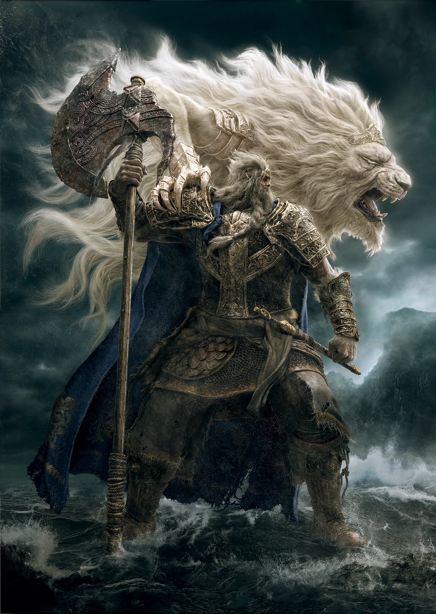
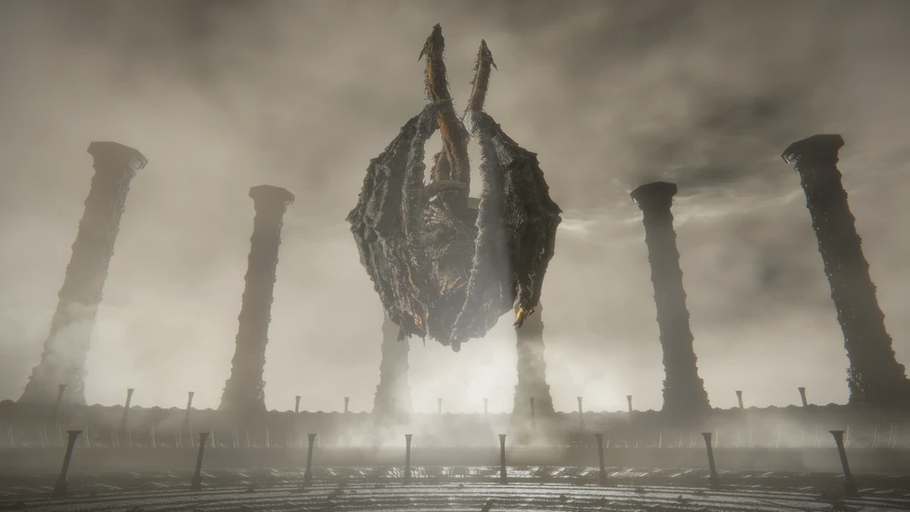
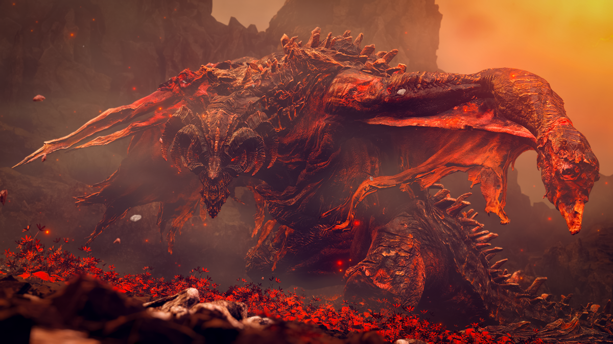
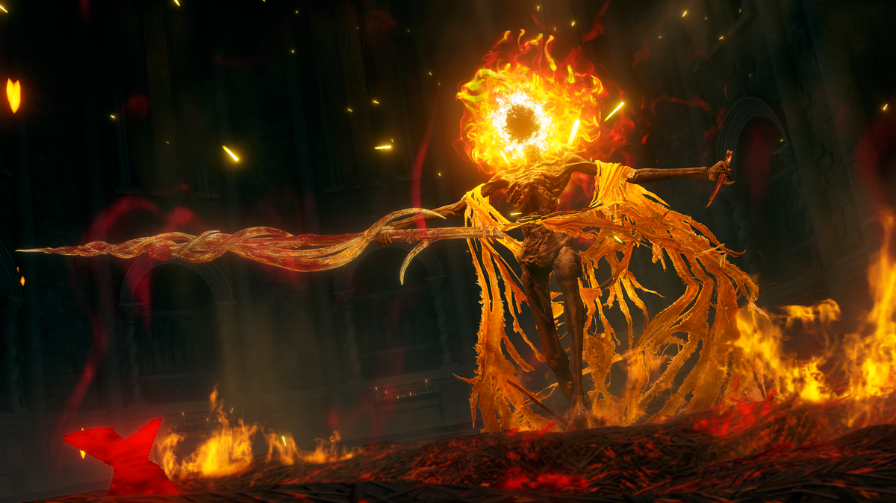
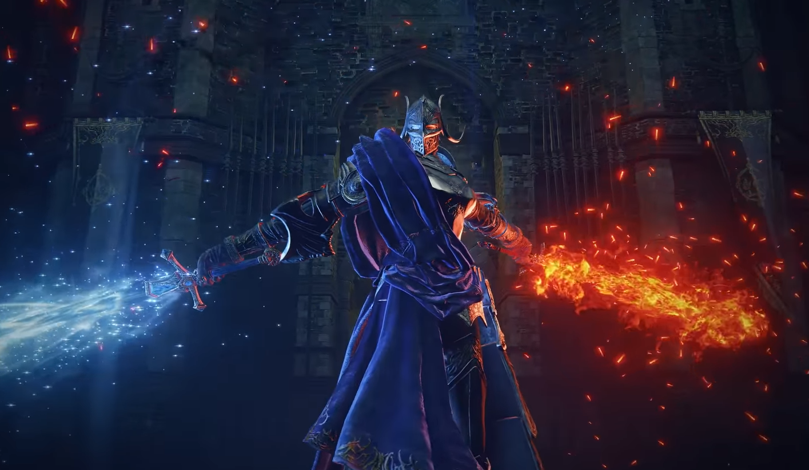

Elden Ring is a great game. Here are some of my favourite bosses.

Lord Godfrey, the First Elden Lord

Dragonlord Placidusax

Bayle the Dread.Crucible Knight DevoniaRegal Ancestor SpiritMohg, Lord of Blood

Midra, Lord of Frenzied FlameDivine Beast Dancing Lion

Rellana, Twin Moon Knight

![Regal Ancestor Spirit is a deer-like creature, existing as a phenomenon beyond the purview of the Erdtree. [Life sprouts from death, as it does from birth. Such is the way of the living.]](images/Regal Ancestral Spirit.png)